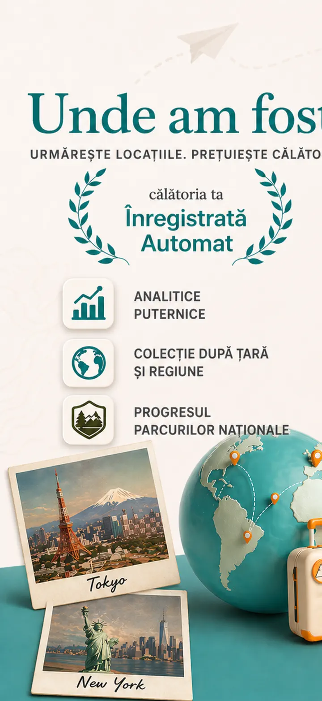
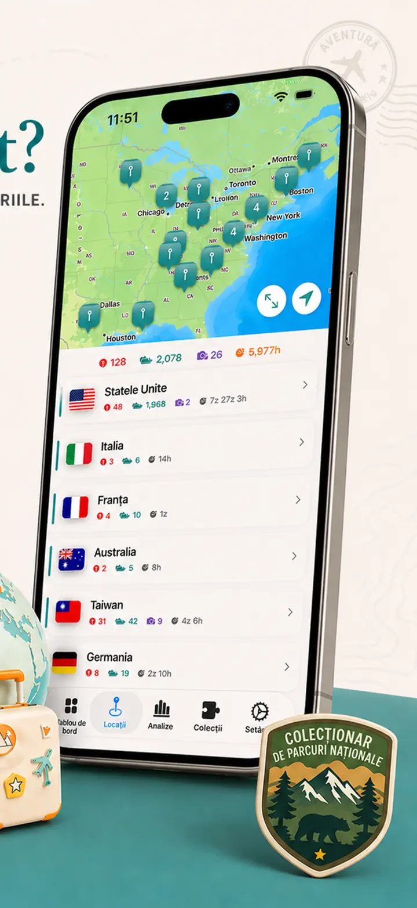
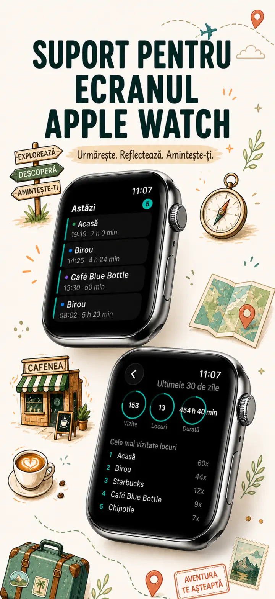
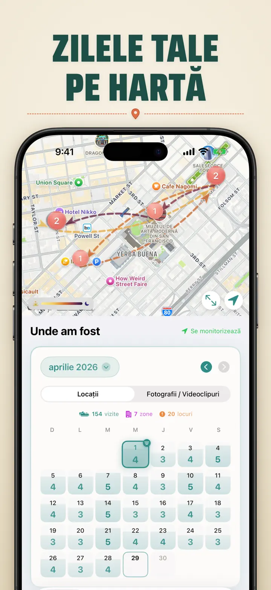
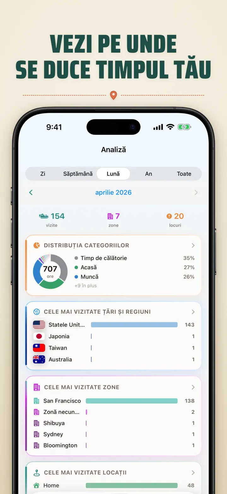
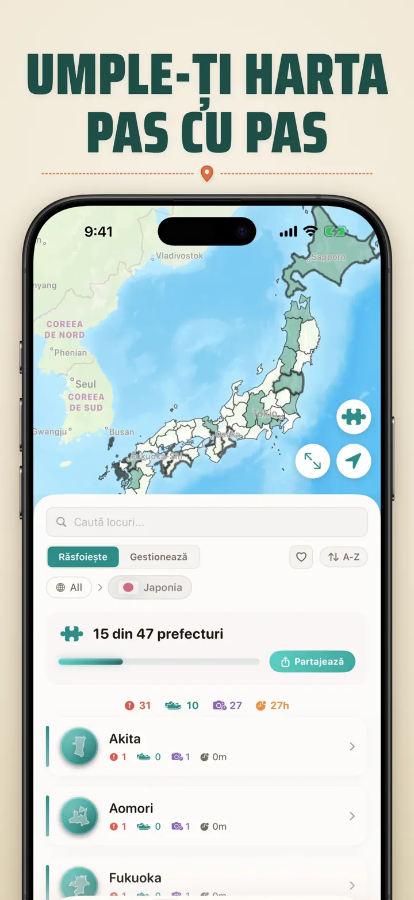
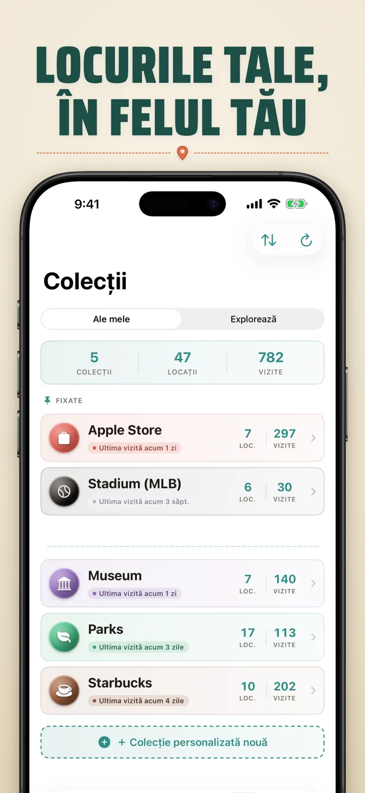
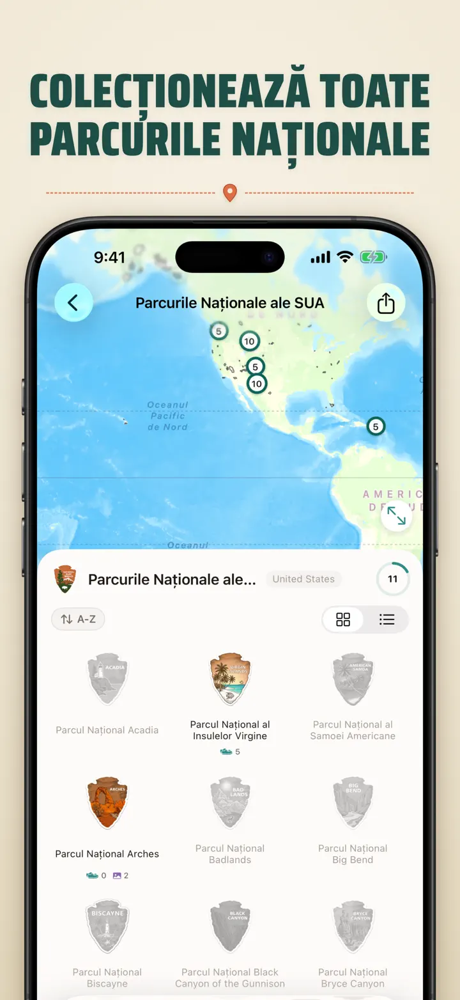
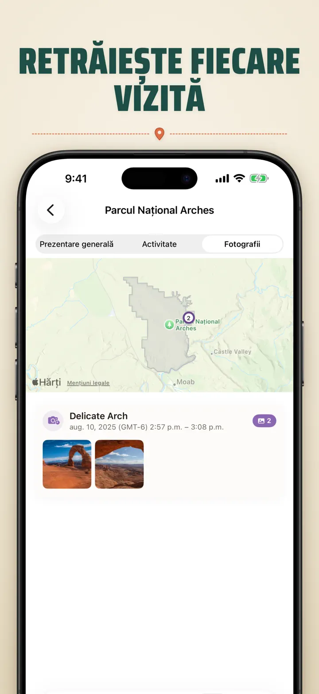

Unde am fost
Călătorii și locații auto
Nou: cele 103 sanctuare Ichinomiya ale Japoniei, fiecare cu insigna sa sculptată. Vizite urmărite automat și o cronologie privată, pe dispozitivul tău.
Descarcă din App Store
Despre aplicație
Where was I ? — Memoria ta personală a locațiilor
Vrei să-ți amintești restaurantul superb de luna trecută? Sau să afli cât timp petreci la birou față de acasă? Where was I ? îți urmărește vizitele și construiește o cronologie frumoasă a vieții tale.
URMĂRIRE AUTOMATĂ
Fără jurnal manual. Aplicația înregistrează discret când ajungi și pleci din locuri, creând un istoric detaliat fără efort.
CALENDAR INTELIGENT
Vezi vizitele pe zi, săptămână sau lună. Calendarul arată numărul de vizite și locurile unice. Atinge orice zi pentru a vedea unde ai fost.
WIDGETURI ECRAN DE START ȘI BLOCARE
Vezi cele mai recente vizite cu widgetul mediu de pe ecranul de start. Cele de pe ecranul de blocare arată locația ta curentă, un cronometru de prezență în timp real sau vizitele de azi — atinge oricare pentru a deschide aplicația.
LOCAȚII ORGANIZATE
Locațiile sunt grupate pe regiune și oraș. Atribuie categorii precum Acasă, Muncă, Sală sau Cafenea. Creează propriile categorii cu pictograme și culori.
ANALIZE PUTERNICE
Descoperă tipare în viața ta:
- Distribuția timpului pe categorii
- Cele mai vizitate locuri
- Analiza ritmului săptămânal
- Tendințele frecvenței vizitelor
- Durata vizitelor pe locație — zi, săptămână, lună sau an
COLECȚIE DE ȚĂRI ȘI REGIUNI
Transformă-ți călătoriile într-un puzzle! Vezi câte state, provincii sau regiuni ai vizitat în fiecare țară. Împărtășește progresul ca imagine.
PROGRES ÎN PARCURI NAȚIONALE
Explorează natura! Înregistrează vizitele în parcurile naționale, alături de locațiile zilnice.
100 CASTELE CELEBRE DIN JAPONIA
În călătorie prin Japonia? O colecție integrată urmărește vizitele tale la cele 100 de castele celebre ale țării. O găsești în Colecții → Explorează → Japonia.
COLECȚII PERSONALIZATE
Apple Stores, muzee, berării, librării — urmărește orice îți dorești. Setează cuvinte cheie și colecția se umple singură. Adaugă sau elimină manual. Număr, istoric și hartă pentru fiecare.
IMPORTĂ-ȚI ISTORICUL LOCAȚIILOR
Vii din altă aplicație? Adu-ți tot istoricul — formatul este detectat automat, exporturile mari sunt gestionate și vezi o previzualizare înainte de a importa ceva:
- Google Timeline (export Google Maps sau Google Takeout)
- Arc Timeline (fișierele .json lunare exportate din Arc)
- Moves (copie de rezervă ProtoGeo / Facebook Moves)
GESTIONARE ÎN MASĂ
Gestionează toate locațiile într-un singur loc. Caută, sortează și filtrează. Selectează mai multe locații pentru a le categoriza sau șterge în masă.
CONFIDENȚIALITATE PE PRIMUL LOC
Datele tale despre locație rămân pe dispozitiv. Fără conturi, fără servere. Mișcările tale sunt treaba ta.
PERFECT PENTRU:
- Urmărirea orelor și locațiilor de muncă
- Memorarea restaurantelor și magazinelor vizitate
- Analiza rutinei zilnice
- Jurnal de călătorie și parcuri naționale
- Rapoarte de cheltuieli și kilometraj
- Înțelegerea modului în care îți aloci timpul
CARACTERISTICI:
- Detectare automată a sosirii și plecării
- Vizualizare calendar cu cronologie zilnică
- Widgeturi ecran de start și blocare cu link-uri directe
- Grupare locații pe regiune și oraș
- Categorii personalizate cu pictograme și culori
- Sugestii inteligente din Apple Maps
- Istoric detaliat al vizitelor cu durată
- Durata vizitelor pe locație (zi/săptămână/lună/an)
- Tablou de bord cu analize
- Căutare și filtrare locații
- Țări și regiuni cu imagine puzzle
- Urmărirea progresului în parcuri naționale
- 100 castele celebre din Japonia (integrat)
- Colecții personalizate cu cuvinte cheie, editare manuală și statistici
- Gestionare în masă a locațiilor
- Import din Google Timeline, Arc Timeline și Moves
- Funcții de export
- Fără cont necesar
- Design centrat pe confidențialitate
Începe-ți memoria locațiilor astăzi. Descarcă Where was I ? și nu mai uita niciodată unde ai fost.
Politica de confidențialitate: https://masawata.net/privacy-policy.html Termeni și condiții: https://www.apple.com/legal/internet-services/itunes/dev/stdeula/
Capturi de ecran








Unde am fost
Nou: cele 103 sanctuare Ichinomiya ale Japoniei, fiecare cu insigna sa sculptată. Vizite urmărite automat și o cronologie privată, pe dispozitivul tău.
Descarcă din App Store